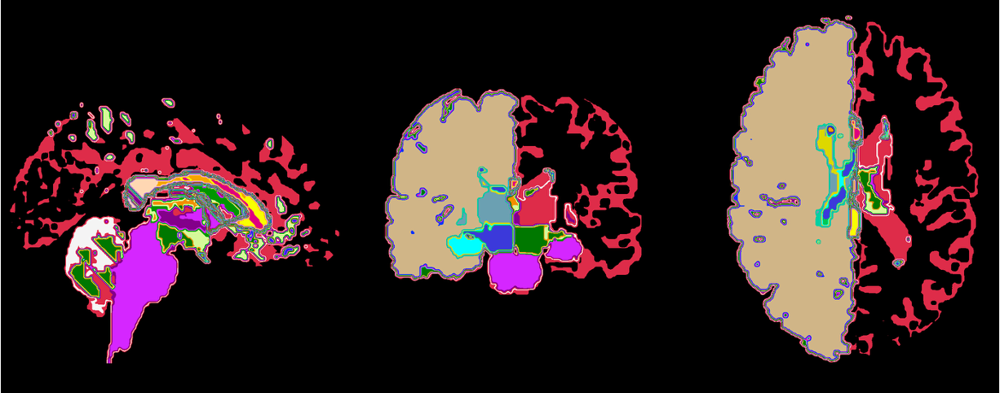
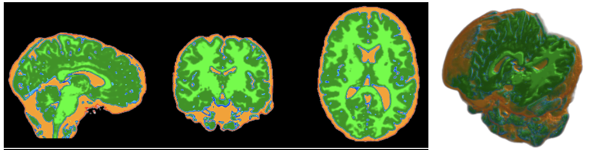
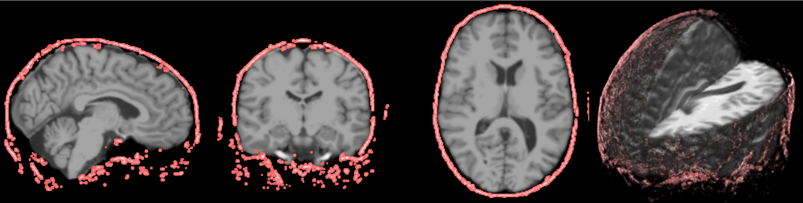
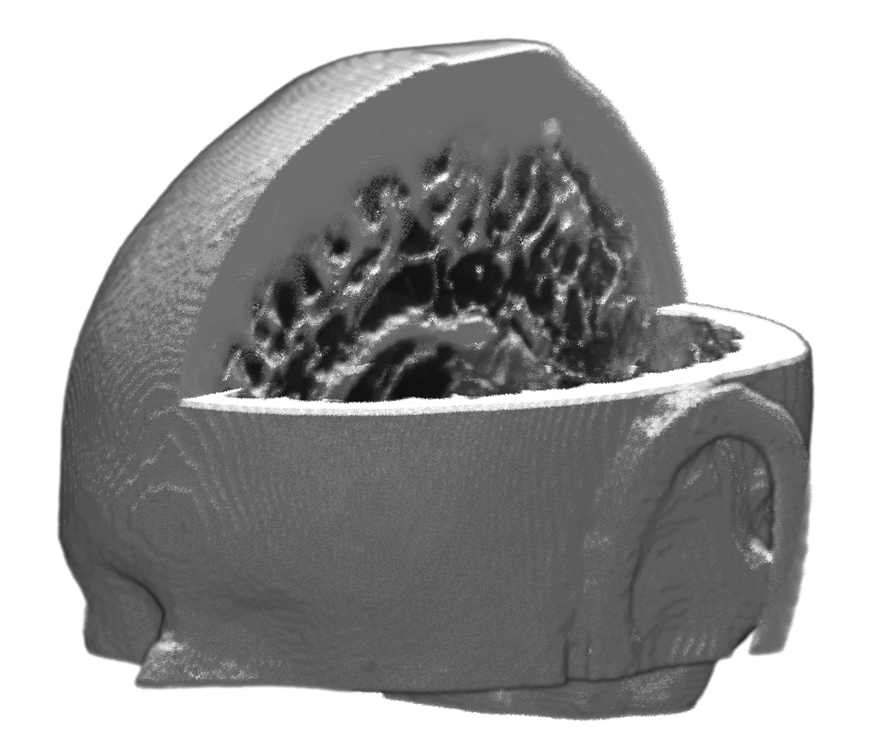
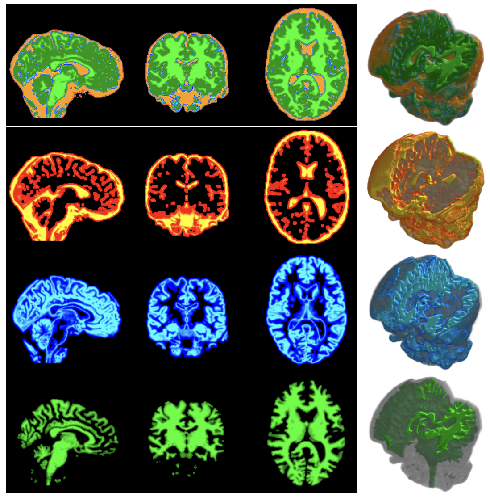

Image Inspection: Checking Processed Outputs Before Meshing
In 02_ImageProcess.ipynb, we generated a series of intermediate NIfTI outputs. In this page, we use FSLeyes to inspect these outputs visually. The goal is not only to become familiar with the software interface, but also to understand what each processing step has produced and to check that the final brain geometry is suitable for downstream FE mesh generation.
Using FSLeyes
A quick tour of the FSLeyes interface
FSLeyes can be used either from the command line or through its graphical interface. In this exercise, we use the graphical interface to inspect the outputs from FSL segmentations. Before examining those images, it is helpful to become familiar with the small set of controls that will be used repeatedly throughout this page.

(Click the image to open a larger version)
The most useful parts of the interface for this exercise are:
- View area: displays the current image in one or more planes
- Overlay list: shows the loaded images and allows them to be shown, hidden, and reordered
- Display settings: used to change the appearance of the selected overlay
- Colour map selector: useful when displaying segmentation or label images
- Opacity control: helps compare an overlay with the anatomical underlay
- Location/value readout: can be useful when inspecting label images
Loading the images
Once FSL has been installed, FSLeyes can be launched from terminal by simply typing fsleyes. Launch FSLeyes and load brain_std.nii.gz by dragging the image file into FSLeyes interface. This is the anatomical image of the example subject avg_male registered to the MNI space, and we use it as the underlay for most of the inspection steps below.
For most of this page, the orthographic view is the most useful choice, as it allows the image to be inspected simultaneously in sagittal, coronal, and axial planes.
View NIfTI files
Anatomical reference image
The brain_std is now in the FSLeyes interface. When viewing the image, readers should focus on the overall brain shape, the appearance of the cortical folds, and the relative position of internal structures across the three slice views.
Labelled segmentation
Our input also includes labelled segmentation information, such as aseg_std.nii.gz, which can be viewed in FSLeyes as a labelled overlay.

Load aseg_std.nii.gz on top of the anatomical reference image brain_std. As with the FAST hard segmentation, a categorical colour map is appropriate here because the image contains labelled regions rather than a continuous intensity scale. Since aseg is the subcortical segmentation of a brain, the colour map MGH Subcortical could be a good option. Adjust the opacity so that both the labels and the anatomical structures can still be seen.
This view helps readers connect segmentation outputs with anatomical interpretation. Rather than focusing on exact region names, the main aim is to recognise that different coloured regions correspond to different labelled structures and that these labels should lie in plausible anatomical locations. This is a useful bridge between image processing outputs and the structure of the brain itself.
FAST hard segmentation
FAST was used to segment the brain image into tissue classes. A useful output to inspect first is the hard segmentation image, brain_std_seg.

Load brain_std_seg as an overlay on brain_std. Because this image contains discrete tissue classes rather than continuous intensities, a categorical colour map is more appropriate than a continuous one. A map such as Random 2 works well here because it colours different classes with distinct colours, and it makes neighbouring classes easier to distinguish. Adjust the overlay opacity until both the segmentation and the anatomy are visible clearly.
When inspecting this image, readers should look for whether the tissue classes occupy plausible regions and whether the boundaries of the segmentation broadly follow the underlying anatomy. The purpose here is not to assess every voxel in detail, but to check that the segmentation is behaving reasonably and producing interpretable tissue regions.
Brain extraction outputs
BET and BETSURF were also used to define the brain region and related boundaries. These outputs help isolate the anatomy of interest and remove non-brain tissue before later processing steps.

Load the brain extraction output T1_bet_skull as an overlay on the anatomical reference. A transparent overlay works well here, as it allows the extracted region to be compared directly against the brain boundaries visible in the underlay. It is often helpful to reduce the opacity slightly so that the anatomical reference image remains visible underneath.
When viewing this result, readers should check whether the brain tissue has been retained while non-brain tissue has been excluded appropriately. It is useful to look especially at the frontal and inferior boundaries, where extraction can sometimes become too tight or too loose. This visual check helps confirm that the extraction step has produced a plausible representation of the brain region.
Pre-model
The final and most important visual check in this page is the pre_model image, created by combining selected intermediate outputs using fslmaths. It forms the basis for the later mesh-generation step. Unlike the earlier images, which show individual segmentation or extraction results, the pre-model brings those processed regions together into a single labelled geometry image.
Load the premodel image as an overlay on brain_std. Because this is a label image, a categorical colour map is the most appropriate choice. Each integer value in the image corresponds to a different region or material class in the geometry, so the colours are used to distinguish labels rather than to represent a continuous intensity scale. Adjust the opacity until both the geometry and the underlying anatomy can be seen clearly.

The brain_std or other images shown previously are true MRI intensity images. Unlike those images, the premodel is not intended to look like a natural anatomical scan. The anatomical reference image retains smooth intensity variation, familiar tissue contrast, and continuous-looking boundaries, so it often appears visually coherent and “organic”, even in clipped or 3D views. By contrast, the premodel is a derived label and geometry image, created by combining masks and segmented regions using fslmaths. Its voxel values therefore represent discrete classes or regions, rather than continuous anatomical signal intensity. As a result, it tends to show sharper boundaries, less internal texture, and more obvious voxel-grid structure, particularly in 3D renderings. This can make the premodel appear rougher or less visually appealing than the earlier images, but this is a consequence of its purpose: it is designed to encode the regions needed for downstream mesh generation, rather than to preserve the visual appearance of the original anatomy. In that sense, it is better understood as a construction map for meshing than as a photograph-like image of the brain.
To inspect the labels more closely, move the cursor over the image and click on different regions. In FSLeyes, the voxel value at the current location is shown in the interface, allowing you to check which label is present at that point. This is useful for confirming that different parts of the geometry have been assigned the expected values. If needed, the colour map and display settings can also be adjusted to make neighbouring labelled regions easier to distinguish.
When inspecting this result, readers should look for whether the geometry appears spatially coherent and whether the labelled regions form a sensible overall structure. There should not be obvious holes, isolated fragments, or unexpected discontinuities. It is also helpful to compare the geometry against the anatomical underlay and check whether the labelled regions lie in plausible positions. Compared with the earlier intermediate outputs, this image should look more task-specific and more directly suited to the geometry required for mesh generation. This is the key visual checkpoint before moving on.
Exercise: Explore the FAST probability maps
In addition to the hard segmentation image, FAST also produces three partial volume estimate images:
brain_std_pve_0brain_std_pve_1brain_std_pve_2
These are tissue probability maps, not hard label images. Each one shows the degree to which a voxel belongs to a given tissue class.
As a short exercise, load these three images one at a time as overlays on brain_std and compare their distributions.
Try to answer the following questions:
- Which probability map appears strongest in fluid-filled spaces?
- Which probability map appears strongest in cortical tissue?
- Which probability map appears strongest in deeper white matter regions?
- Where do the maps appear less certain or more mixed?
Suggested answer
In the following figure, the top image is the brain_std_seg, the FAST output which divided the brain into discrete tissue classes; each voxel is assigned to one tissue class only. The following three images represent the probability of belonging to the three FAST tissue classes. In a typical brain segmentation, they correspond broadly to CSF, grey matter, and white matter.
brain_std_pve_0is typically strongest in CSF-like spacesbrain_std_pve_1is typically strongest in grey matterbrain_std_pve_2is typically strongest in white matter
Uncertainty is often most visible near tissue boundaries, where voxels may contain a mixture of tissue types.

💡 Summary: display tips in FSLeyes
A few simple display adjustments can make visual inspection much easier:
- If an overlay hides too much of the anatomy, reduce its opacity
- For segmentation or label images, use a categorical colour map rather than a continuous one
- If the view becomes cluttered, inspect one overlay at a time
- If a boundary is hard to interpret, compare the same location across the sagittal, coronal, and axial views
- Keep the brain anatomical reference
brain.nii.gzor the same one in MNI spacebrain_std.nii.gzas the anatomical underlay for consistency while switching between overlays
These small adjustments often make it much easier to compare outputs and understand what each processing step has produced.
Extended exploration in FSLeyes
FSLeyes also provides several additional viewing modes and tools that can help readers explore the images in more depth. These are not required for the workflow itself, but they are useful for developing a better visual understanding of the data and the processed outputs.
Exploring the 3D view
FSLeyes also provides a 3D view, which can be used to inspect the overall shape of an image or overlay. This was already used for serveral images above.
To open the 3D display, switch from orthographic to 3D view. In this view, the image can be rotated, zoomed, and repositioned. This gives a more global impression of the structure than slice-based views, although it is usually less precise for detailed inspection.
One particularly useful feature is the ability to clip the 3D view, so that the inside of a structure becomes visible. By applying clipping planes, readers can cut through the rendered image and inspect internal regions that would otherwise remain hidden inside the outer surface. This is useful, for example, when viewing the brain anatomy or the geometry image in three dimensions.
In a clipped 3D view, the anatomy can look very different from the orthographic slice views. This is because the rendered object is being displayed as a volume in three-dimensional space, and the clipping plane reveals its interior by removing part of the outer volume. For anatomical intensity images such as brain.nii.gz, this often produces a visually smooth and recognisable result. For label or geometry images such as the premodel, however, the 3D appearance may look rougher and more voxel-like, because these images contain discrete classes rather than continuous anatomical intensity.
The 3D view is therefore best used as a complementary visualisation tool. It is useful for understanding overall shape and spatial relationships, but it should not replace slice-based inspection when readers need to check boundaries, labels, or fine details.
Lightbox view
In addition to the standard orthographic view, FSLeyes also provides a lightbox view, which displays many slices from the same plane at once. This can be useful when readers want to inspect how a structure extends across the brain, rather than examining one slice at a time.
To use this view, switch the display layout from orthographic to lightbox, then choose the slice direction of interest. The axial direction is often a good starting point, but sagittal and coronal lightbox views can also be informative depending on the structure being inspected.
Lightbox view is particularly helpful for images such as the FAST segmentation outputs or the final premodel image, because it allows readers to assess continuity across multiple slices. For example, a structure that appears plausible in one slice may be seen to fragment or disappear unexpectedly when viewed across the full stack. In this way, lightbox view can complement the orthographic view by providing a more global slice-based overview.
Atlas and labels
FSLeyes can also display atlas information, which can help readers relate image locations to anatomical structures. This is especially useful when working with labelled images such as aseg.nii.gz, where different integer values correspond to different regions.
To explore labels, first load a labelled image and move the cursor across different structures in the image. The interface will show the voxel value at the current location, allowing readers to see which label is present in that region. This is the simplest way to inspect labelled segmentations directly.
Atlas tools provide an additional level of interpretation. Rather than only seeing the numerical label value, readers can also query anatomical regions using the atlas facilities available in FSLeyes. This can be useful when trying to understand where a structure lies in relation to commonly recognised brain regions, or when comparing a label image with a more standard anatomical reference.
At this stage, the goal is not to carry out detailed anatomical annotation, but rather to begin connecting segmentation outputs with anatomical meaning. Readers may find it useful to compare aseg.nii.gz with the anatomical underlay and use the displayed label values as a guide to which structures have been segmented.
Moving on to mesh generation
Once the final premodel image has been checked visually, the workflow can proceed to the next stage of mesh generation. Although this inspection step is simple, it is important: checking the geometry at this stage can help identify problems early, before later and more computationally expensive processing begins.
Further reading
- FSLeyes documentations
- Did you know that you can use FSLeyes from Jupyter? The
fsleyespackage